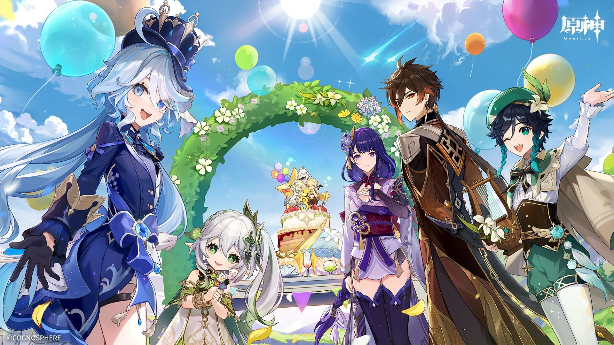
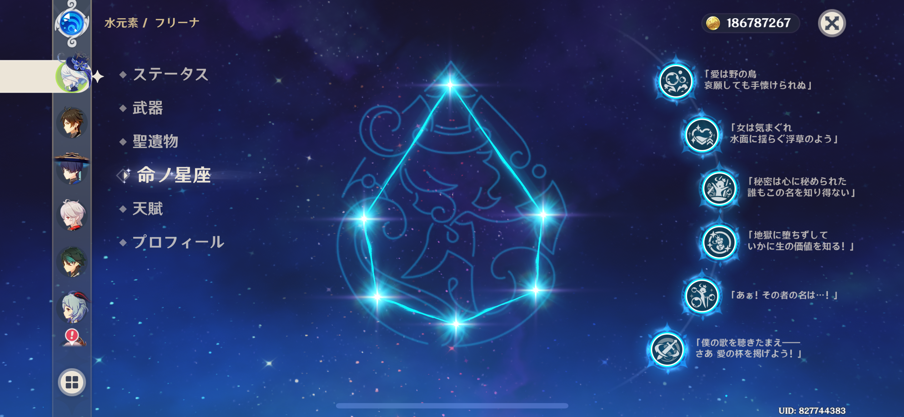

Profile
大内 規義
学校休んだっていいじゃない
人間だもの
みつを
生年月日
2005年4月13日
学校名
東京デザインテクノロジーセンター専門学校
学年／専攻
1学年／スーパーITエンジニア専攻
ニックネーム
完凸
出身地
日本
長所
運がいい
短所
性格が悪い
Favorite
好きなゲーム
原神
好きなキャラ
フリーナ
好きな武器
飛雷の鳴弦
好きな聖遺物
絶縁の旗印
好きな命ノ星座
「僕の歌を聞きたまえ―― さあ 愛の杯を掲げよう！」 （フリーナの完凸効果）
好きな天賦
武芸マスター
好きな国
フォンテーヌ